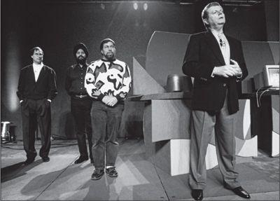

Amelio calling up Wozniak as Jobs hangs back, 1997
“It’s rare that you see an artist in his thirties or forties able to really contribute something amazing,” Jobs declared as he was about to turn thirty.
“你很少能见到一个艺术家在三四十岁时还能有令人惊叹的作品。”乔布斯即将30岁的时候这样说。
That held true for Jobs in his thirties, during the decade that began with his ouster from Apple in 1985. But after turning forty in 1995, he flourished. Toy Story was released that year, and the following year Apple’s purchase of NeXT offered him reentry into the company he had founded. In returning to Apple, Jobs would show that even people over forty could be great innovators. Having transformed personal computers in his twenties, he would now help to do the same for music players, the recording industry’s business model, mobile phones, apps, tablet computers, books, and journalism.
乔布斯30多岁的时候，自他1985年离开苹果后的10年间，确实少有建树。但是当他1995年步入40岁以后，却成就卓著。那一年《玩具总动员》发行上映，第二年苹果收购NeXT，使他一举重返他当年创建的公司。回到苹果，乔布斯将证明，即使超过40岁的人也可以是最好的创新者。二十几岁，他就改变了个人电脑，现在，他将同样改变音乐播放器、唱片产业的商业模式、移动电话、应用软件、平板电脑、书籍以及新闻业。
He had told Larry Ellison that his return strategy was to sell NeXT to Apple, get appointed to the board, and be there ready when CEO Gil Amelio stumbled. Ellison may have been baffled when Jobs insisted that he was not motivated by money, but it was partly true. He had neither Ellison’s conspicuous consumption needs nor Gates’s philanthropic impulses nor the competitive urge to see how high on the Forbes list he could get. Instead his ego needs and personal drives led him to seek fulfillment by creating a legacy that would awe people. A dual legacy, actually: building innovative products and building a lasting company. He wanted to be in the pantheon with, indeed a notch above, people like Edwin Land, Bill Hewlett, and David Packard. And the best way to achieve all this was to return to Apple and reclaim his kingdom.
他之前告诉拉里·埃利森，他的回归策略是把NeXT卖给苹果，借此进入董事会，然后在那儿等着阿梅里奥出错。当乔布斯坚持说他的动机不是钱时，埃利森可能感到迷惑不解。但那的确部分属实。他既没有埃利森那种惹人注目的消费需求，也没有比尔·盖茨那种投身慈善事业的内在冲动，亦没有那种想看看自己在《福布斯》排行榜上能爬多髙的竞争意识。在他那自负和个人动力的驱使下，他要通过创造足以令世人敬畏的传奇来获得满足。这实际上包括两个方面：制造不断革新不断变化的伟大产品，以及建立一家有持久生命力的公司。他希望跟埃德温·兰德、比尔·休利特和戴维·帕卡德这些人一起在万神殿占据一席之地，甚至比他们还要髙一级。要实现这些，最好的方式就是回到苹果，夺回他的王朝。
然而……当回归的时机真的到来时，他却有一种奇怪的游移不定的感觉。削弱吉尔·阿梅里奥的力量，他倒不会觉得不好意思。那是他的本性，而且一旦他认定阿梅里奥不知道自己在做什么，他就别无选择。
And yet when the cup of power neared his lips, he became strangely hesitant, reluctant, perhaps coy.
但是当权力之杯到了嘴边，他会奇怪地开始迟疑，甚至不愿接受，也许是故作姿态。
He returned to Apple officially in January 1997 as a part-time advisor, as he had told Amelio he would. He began to assert himself in some personnel areas, especially in protecting his people who had made the transition from NeXT. But in most other ways he was unusually passive. The decision not to ask him to join the board offended him, and he felt demeaned by the suggestion that he run the company’s operating system division. Amelio was thus able to create a situation in which Jobs was both inside the tent and outside the tent, which was not a prescription for tranquillity. Jobs later recalled:
1997年1月，他作为一位非正式的兼职顾问入职苹果，如他之前告诉阿梅里奥的那样。他开始介入一些人事问题，尤其是会保护他从NeXT带过来的员工。但是在其他大多数方面，他都异乎寻常的被动。他对不让他加入董事会的决定感觉不快，而让他管理公司的操作系统部门的建议也让他觉得是贬低了他的价值。阿梅里奥得以创造了这样一种局面，乔布斯既是局内人又是局外人，这可不是和睦之道。乔布斯后来回忆：
Gil didn’t want me around. And I thought he was a bozo. I knew that before I sold him the company. I thought I was just going to be trotted out now and then for events like Macworld, mainly for show. That was fine, because I was working at Pixar. I rented an office in downtown Palo Alto where I could work a few days a week, and I drove up to Pixar for one or two days. It was a nice life. I could slow down, spend time with my family.
吉尔不希望我在。而我认为他是个笨蛋，我在把公司卖给他之前就知道。我想，我现在就是做做形象大使，在类似Macworld这样的活动上出席一下，主要为了作秀。这没问题，因为我还在皮克斯工作。我在帕洛奥图市中心祖了一间办公室，可以每周在那儿工作几天，再开车去皮克斯待个一两天。这日子不错。我可以慢下脚步，多陪陪家人。
Jobs was, in fact, trotted out for Macworld right at the beginning of January, and this reaffirmed his opinion that Amelio was a bozo. Close to four thousand of the faithful fought for seats in the ballroom of the San Francisco Marriott to hear Amelio’s keynote address. He was introduced by the actor Jeff Goldblum. “I play an expert in chaos theory in The Lost World: Jurassic Park,” he said. “I figure that will qualify me to speak at an Apple event.” He then turned it over to Amelio, who came onstage wearing a flashy sports jacket and a banded-collar shirt buttoned tight at the neck, “looking like a Vegas comic,” the Wall Street Journal reporter Jim Carlton noted, or in the words of the technology writer Michael Malone, “looking exactly like your newly divorced uncle on his first date.”
事实上，在1月初的Macworld活动上，乔布斯就做起了形象大使，而这次的经历让他更坚定地认为，阿梅里奥就是个笨蛋。将近4000位忠实粉丝争先恐后地汇集到旧金山万豪酒店的大宴会厅，聆听阿梅里奥的主题演讲。介绍他上台的是演员杰夫·高布伦（JeffGoldblum），就是在《独立日》里扮演用苹果电脑PowerBook拯救了世界的人。“在《侏罗纪公园2：失落的世界》里，我饰演了一位混淹理论专家。”他说，“我想，这使我有资格在苹果的活动上讲话。”然后他把舞台交给了阿梅里奥。阿梅里奥走上台来，穿着件闪光的休闲夹克，里面是件立领衬衫，领子紧紧地贴着脖子——“看起来像拉斯韦加斯的滑稽演员。”《华尔街日报》的记者吉姆·卡尔顿（JimCarlton）后来写道。或用另一位科技作家迈克尔·马隆的话说，“看着就像是你刚离婚的舅舅第一次出来约会”。
The bigger problem was that Amelio had gone on vacation, gotten into a nasty tussle with his speechwriters, and refused to rehearse. When Jobs arrived backstage, he was upset by the chaos, and he seethed as Amelio stood on the podium bumbling through a disjointed and endless presentation. Amelio was unfamiliar with the talking points that popped up on his teleprompter and soon was trying to wing his presentation. Repeatedly he lost his train of thought. After more than an hour, the audience was aghast. There were a few welcome breaks, such as when he brought out the singer Peter Gabriel to demonstrate a new music program. He also pointed out Muhammad Ali in the first row; the champ was supposed to come onstage to promote a website about Parkinson’s disease, but Amelio never invited him up or explained why he was there.
更大的问题是，阿梅里奥之前去度假了，又跟他的演讲稿作者大吵一架，而且拒绝彩排。当乔布斯到达后台时，对现场的混乱局面备感沮丧。肴着阿梅里奥站在讲台那儿笨拙地做着前后脱节没完没了的演讲，乔布斯气愤不已。阿梅里奥对讲词提示器上蹦出来的那些讲点并不熟悉，很快就开始忘词。他思路断断续续。就这样过了一个多小时，观众都目瞪口呆。中间倒是有几次让大家松口气的间歇，诸如他把歌手彼得·加布里埃尔（PeterGabriel）请上台演示一个新的音乐软件的时候。他还指出了坐在第一排的穆罕默德·阿里。这位拳王按计划是要上台推介一个关于帕金森综合征的网站，可是阿梅里奥一直没请他上台，也没解释他为什么在场。
Amelio rambled for more than two hours before he finally called onstage the person everyone was waiting to cheer. “Jobs, exuding confidence, style, and sheer magnetism, was the antithesis of the fumbling Amelio as he strode onstage,” Carlton wrote. “The return of Elvis would not have provoked a bigger sensation.” The crowd jumped to its feet and gave him a raucous ovation for more than a minute. The wilderness decade was over. Finally Jobs waved for silence and cut to the heart of the challenge. “We’ve got to get the spark back,” he said. “The Mac didn’t progress much in ten years. So Windows caught up. So we have to come up with an OS that’s even better.”
阿梅里奥喂唆了两个多小时，最后终于把所有人都等着为之欢呼的人请上了台。“乔布斯大步跨上舞台，自信而有型，魅力四射，跟阿梅里奥的笨手笨脚形成了鲜明对照。”卡尔顿写道，“即使是猫王归来也不会引起比这更大的轰动。”观众纷纷起立，震耳欲聋的掌声持续了超过一分钟。杂乱无章的十年就此终结。最后，他挥手请大家安静，直入主题。“我们要再创辉煌。”他说，“Mac十年来没有什么进步，所以Windows赶上来了。我们必须拿出一个更好的操作系统。”
Jobs’s pep talk could have been a redeeming finale to Amelio’s frightening performance. Unfortunately Amelio came back onstage and resumed his ramblings for another hour. Finally, more than three hours after the show began, Amelio brought it to a close by calling Jobs back onstage and then, in a surprise, bringing up Steve Wozniak as well. Again there was pandemonium. But Jobs was clearly annoyed. He avoided engaging in a triumphant trio scene, arms in the air. Instead he slowly edged offstage. “He ruthlessly ruined the closing moment I had planned,” Amelio later complained. “His own feelings were more important than good press for Apple.” It was only seven days into the new year for Apple, and already it was clear that the center would not hold.
乔布斯鼓舞人心的演讲本可以作为结束语，弥补阿梅里奥的可怕表现。不幸的是，阿梅里奥又回到舞台上，继续胡说八道了一个小时。最后，活动开始后过了三个多小时，阿梅里奥终于开始结尾，再次请乔布斯上台，然后出乎意料地把史蒂夫·沃兹尼亚克也请了上来。现场又是一阵骚动。但是乔布斯显然反感这一幕。他不想参与这样三个人举起手臂庆祝胜利的一幕。于是，他慢慢地溜下了台。“他无情地破坏了我策划的落幕式，”阿梅里奥后来抱怨，“他个人的感觉比苹果的媒体形象更重要。”这刚刚是苹果进入新纪元的第七天，一切就已经很显然，杈力的中心再也难以保持不变了。
Jobs immediately put people he trusted into the top ranks at Apple. “I wanted to make sure the really good people who came in from NeXT didn’t get knifed in the back by the less competent people who were then in senior jobs at Apple,” he recalled. Ellen Hancock, who had favored choosing Sun’s Solaris over NeXT, was on the top of his bozo list, especially when she continued to want to use the kernel of Solaris in the new Apple operating system. In response to a reporter’s question about the role Jobs would play in making that decision, she answered curtly, “None.” She was wrong. Jobs’s first move was to make sure that two of his friends from NeXT took over her duties.
乔布斯立即开始把他信任的人安排到苹果的高层位置。“我想确保来自NeXT的真正优秀的人，不会被当时在苹果担任髙级职位的没那么优秀的人从背后捅刀子。”他回忆说。曾经赞同苹果选择Sun公司Solaris系统而不是NeXT的埃伦·汉考克，在乔布斯的“笨蛋名单”上位列前茅，尤其是她仍然想在苹果的新操作系统中采用Solaris的核心技术。当一个记者问她在这一抉择中乔布斯将扮演什么角色时，她草率地回答，“没有角色。”她错了。乔布斯的第一步动作，就是确保用他从NeXT带来的两个朋友接替了她的职责。
To head software engineering, he tapped his buddy Avie Tevanian. To run the hardware side, he called on Jon Rubinstein, who had done the same at NeXT back when it had a hardware division. Rubinstein was vacationing on the Isle of Skye when Jobs called him. “Apple needs some help,” he said. “Do you want to come aboard?” Rubinstein did. He got back in time to attend Macworld and see Amelio bomb onstage. Things were worse than he expected. He and Tevanian would exchange glances at meetings as if they had stumbled into an insane asylum, with people making deluded assertions while Amelio sat at the end of the table in a seeming stupor.
他指定他的好朋友阿维·泰瓦尼安负责软件工程。硬件方面，他找来了乔恩·鲁宾斯坦，当年NeXT还有硬件部门时，鲁宾斯坦担任同样的职务。当乔布斯直接给他打电话时，他正在英国的斯凯岛度假。“苹果需要帮助，”乔布斯说，“你想加入吗？”鲁宾斯坦的确很想。他及时赶回来参加Macworld大会，也看到了阿梅里奥在台上出丑。形势比他预想的还糟。他和泰瓦尼安常常在会议中交换眼神，感觉仿佛是误入了精神病院，大家都在说着疯话，而阿梅里奥坐在桌子的尽头，一副神志不清的样子。
Jobs did not come into the office regularly, but he was on the phone to Amelio often. Once he had succeeded in making sure that Tevanian, Rubinstein, and others he trusted were given top positions, he turned his focus onto the sprawling product line. One of his pet peeves was Newton, the handheld personal digital assistant that boasted handwriting recognition capability. It was not quite as bad as the jokes and Doonesbury comic strip made it seem, but Jobs hated it. He disdained the idea of having a stylus or pen for writing on a screen. “God gave us ten styluses,” he would say, waving his fingers. “Let’s not invent another.” In addition, he viewed Newton as John Sculley’s one major innovation, his pet project. That alone doomed it in Jobs’s eyes.
乔布斯不经常来办公室，但是他经常给阿梅里奥打电话。一旦他成功地把泰瓦尼安、鲁宾斯坦等他信任的人安插在髙管位置上后，他就把注意力转向了杂七杂八的产品线。他的眼中钉之一就是牛顿（Newton），这是一款手持个人电子设备，宣称有很好的手写识别率。其实它也并非如大家玩笑中的以及《杜斯别里家族》（Doonesbury、连环画里说得那么糟糕，但是乔布斯讨厌它。他很鄙视用手写笔在屏幕上写字的想法。“上帝给了我们十支手写笔，”他会挥舞着他的手指说，“我们不要再多发明一个了。”再加上，乔布斯把牛顿看做是约翰·斯卡利的主要发明，是斯卡利最喜爱的项目。仅这一点，就足以让它在乔布斯的眼里永无出头之日。
“You ought to kill Newton,” he told Amelio one day by phone.
It was a suggestion out of the blue, and Amelio pushed back. “What do you mean, kill it?” he said. “Steve, do you have any idea how expensive that would be?”
“Shut it down, write it off, get rid of it,” said Jobs. “It doesn’t matter what it costs. People will cheer you if you got rid of it.”
“I’ve looked into Newton and it’s going to be a moneymaker,” Amelio declared. “I don’t support getting rid of it.” By May, however, he announced plans to spin off the Newton division, the beginning of its yearlong stutter-step march to the grave.
“你应该把牛顿砍掉。”一天他打电话给阿梅里奥说。
这是个毫无来由的建议，阿梅里奥难以接受。“什么意思，砍掉？”他说,“史蒂夫，你有没有概念，那得要花多少钱？”
“停产，核销，处理掉。”乔布斯说。“花多少钱不重要，如果你把它处理掉，人们会为你喝彩。”
“我仔细研究了牛顿，它是能赚钱的。”阿梅里奥说，“我不支持把它处理掉。”然而，到5月份，他宣布了分拆牛顿部门的计划。之后经过长达一年磕磕绊绊的跋涉，它的生命走向终结。
Tevanian and Rubinstein would come by Jobs’s house to keep him informed, and soon much of Silicon Valley knew that Jobs was quietly wresting power from Amelio. It was not so much a Machiavellian power play as it was Jobs being Jobs. Wanting control was ingrained in his nature. Louise Kehoe, the Financial Times reporter who had foreseen this when she questioned Jobs and Amelio at the December announcement, was the first with the story. “Mr. Jobs has become the power behind the throne,” she reported at the end of February. “He is said to be directing decisions on which parts of Apple’s operations should be cut. Mr. Jobs has urged a number of former Apple colleagues to return to the company, hinting strongly that he plans to take charge, they said. According to one of Mr. Jobs’ confidantes, he has decided that Mr. Amelio and his appointees are unlikely to succeed in reviving Apple, and he is intent upon replacing them to ensure the survival of ‘his company.’”
泰瓦尼安和鲁宾斯坦会到乔布斯家里向他汇报公司的情况，很快，硅谷的大部分人都知道乔布斯在暗中削弱阿梅里奥的权力。这倒并不是场处心积虑的杈谋之战，只是乔布斯的自然之举。控制欲是他骨子里的本性。路易丝·基欧，就是阿梅里奥在12月宣布乔布斯回归时便有此预见、向乔布斯提问的那位《金融时报》记者，率先就此做了文章。“乔布斯先生已经开始垂帘听政，”她在2月底如是报道，“据说他正在指导苹果决定哪些业务应该砍掉。他们说，乔布斯先生已经催促一些前苹果员工回到公司，并强烈暗示说他计划掌管大局。根据乔布斯先生的一位关系密切人士所说，他已经认定阿梅里奥先生和他任命的人无法让苹果重现辉煌。他打算把他们替换掉，以确保‘他的公司’得以生存。”
That month Amelio had to face the annual stockholders meeting and explain why the results for the final quarter of 1996 showed a 30% plummet in sales from the year before. Shareholders lined up at the microphones to vent their anger. Amelio was clueless about how poorly he handled the meeting. “The presentation was regarded as one of the best I had ever given,” he later wrote. But Ed Woolard, the former CEO of DuPont who was now the chair of the Apple board (Markkula had been demoted to vice chair), was appalled. “This is a disaster,” his wife whispered to him in the midst of the session. Woolard agreed. “Gil came dressed real cool, but he looked and sounded silly,” he recalled. “He couldn’t answer the questions, didn’t know what he was talking about, and didn’t inspire any confidence.”
当月，阿梅里奥必须面对一年一度的股东大会，并解释为什么1996财年最后一个季度的销售量比上年同期暴跌了30%。股东们在麦克风前排着队发泄他们的愤怒。阿梅里奥完全不知道自己把会议开得多么糟糕。“这是我做过的最好的一次演讲。”他后来得意扬扬地说。然而苹果董事会主席、杜邦公司（DuPont）前CEO埃德·伍拉德（EdWoolard,马库拉当时已降职为副主席）却听得大惊失色。“这真是场灾难。”他妻子听到一半时在他耳边说。伍拉德也这么认为。“吉尔穿得很酷，可他无论看起来还是听起来都很愚蠢。”他回忆说，“他无法回答问题，不知道他自己在说什么，也没有鼓舞起大家的信心。”
Woolard picked up the phone and called Jobs, whom he’d never met. The pretext was to invite him to Delaware to speak to DuPont executives. Jobs declined, but as Woolard recalled, “the request was a ruse in order to talk to him about Gil.” He steered the phone call in that direction and asked Jobs point-blank what his impression of Amelio was. Woolard remembers Jobs being somewhat circumspect, saying that Amelio was not in the right job. Jobs recalled being more blunt:
伍拉德拿起电话打给乔布斯，他们还从未见过面。他借口说想邀请他去特拉华州给杜邦公司的髙管演讲。乔布斯婉拒了，但是伍拉德回忆，“那次邀请是个小伎俩，是为了能跟他讨论吉尔的问题。”他把谈话引向那个方向，然后直截了当地问乔布斯对阿梅里奥是什么印象。伍拉德记得乔布斯当时比较谨慎，只是说阿梅里奧不适合现在的工作。而据乔布斯自己回忆，他当时更是直言不讳：
I thought to myself, I either tell him the truth, that Gil is a bozo, or I lie by omission. He’s on the board of Apple, I have a duty to tell him what I think; on the other hand, if I tell him, he will tell Gil, in which case Gil will never listen to me again, and he’ll fuck the people I brought into Apple. All of this took place in my head in less than thirty seconds. I finally decided that I owed this guy the truth. I cared deeply about Apple. So I just let him have it. I said this guy is the worst CEO I’ve ever seen, I think if you needed a license to be a CEO he wouldn’t get one. When I hung up the phone, I thought, I probably just did a really stupid thing.
我对自己说，我要不就告诉他实话，吉尔是个笨蛋，要不就避而不谈。他是董事会成员，我有义务告诉他我的看法；另一方面，如果我告诉他，他会告诉吉尔，那样吉尔就再也不会听我的了，而且还会把我带进苹果的那些人都灭掉。所有这些想法在30秒钟之内在我脑子里闪过。我最后觉得我应该告诉他真相。我非常在乎苹果，所以我就給他真相。于是我说，这个家伙是我见过的最差劲儿的CEO,我想如果你需要拿个执照才能做CEO,那他都拿不到。等我挂上电话，我想，我可能刚刚做了件非常愚蠢的事。
That spring Larry Ellison saw Amelio at a party and introduced him to the technology journalist Gina Smith, who asked how Apple was doing. “You know, Gina, Apple is like a ship,” Amelio answered. “That ship is loaded with treasure, but there’s a hole in the ship. And my job is to get everyone to row in the same direction.” Smith looked perplexed and asked, “Yeah, but what about the hole?” From then on, Ellison and Jobs joked about the parable of the ship. “When Larry relayed this story to me, we were in this sushi place, and I literally fell off my chair laughing,” Jobs recalled. “He was just such a buffoon, and he took himself so seriously. He insisted that everyone call him Dr. Amelio. That’s always a warning sign.”
那年春天，甲骨文的拉里·埃利森在一次聚会上见到阿梅里奥，把他介绍给了科技记者吉娜·史密斯（GinaSmith）。她问苹果情况如何。“你知道，吉娜，苹果就像一条船，”阿梅里奥回答，“那条船满载着宝藏，但是船上有个洞。我的工作就是让所有人都朝同一个方向划船。”史密斯看起来很迷惑地问，“是的，但是，那个洞怎么办？”从那时起，埃利森和乔布斯就一直拿这个关于船的比喩开玩笑。“当拉里给我讲这个故事的时候，我们正在吃寿司，我真是笑得都直不起腰来了。”乔布斯回忆说，“他就是那样一个小丑，还特别把自己当回事儿。他坚持让所有人称呼他为阿梅里奥博士，以此提醒别人尊重他。”
Brent Schlender, Fortune’s well-sourced technology reporter, knew Jobs and was familiar with his thinking, and in March he came out with a story detailing the mess. “Apple Computer, Silicon Valley’s paragon of dysfunctional management and fumbled techno-dreams, is back in crisis mode, scrambling lugubriously in slow motion to deal with imploding sales, a floundering technology strategy, and a hemorrhaging brand name,” he wrote. “To the Machiavellian eye, it looks as if Jobs, despite the lure of Hollywood—lately he has been overseeing Pixar, maker of Toy Story and other computer-animated films—might be scheming to take over Apple.”
《财富》杂志消息灵通的科技记者布伦特·施伦德（BrentSchlender）认识乔布斯并且熟悉他的想法。3月，他写了一篇文章，详细描述了苹果的混乱局面。“苹果计算机公司正步入危机，面对销售剧减、科技战略错乱、品牌价值流失等一系列问题，行动迟缓、手足无措，它已成为硅谷管理失控、说着科技呓语的典型代表。”他写道，“从杈谋家的角度看，似乎乔布斯可能会策划接管苹果，尽管有好莱坞的诱惑——最近他在管理皮克斯，制作《玩具总动员》和其他电脑动画影片。”
Once again Ellison publicly floated the idea of doing a hostile takeover and installing his “best friend” Jobs as CEO. “Steve’s the only one who can save Apple,” he told reporters. “I’m ready to help him the minute he says the word.” Like the third time the boy cried wolf, Ellison’s latest takeover musings didn’t get much notice, so later in the month he told Dan Gillmore of the San Jose Mercury News that he was forming an investor group to raise $1 billion to buy a majority stake in Apple. (The company’s market value was about $2.3 billion.) The day the story came out, Apple stock shot up 11% in heavy trading. To add to the frivolity, Ellison set up an email address, savapple@us.oracle.com, asking the general public to vote on whether he should go ahead with it.
又一次，埃利森公开表示想要对苹果进行恶意收购，然后让他“最好的朋友”乔布斯做CEO。“乔布斯是唯一可以拯救苹果的人。”他告诉记者们，“只要他开口，我随时准备助他一臂之力。”跟狼来了的故事一样，埃利森最新重申的收购想法没有得到很多关注，所以当月晚些时候，他告诉《圣何塞水星报》的丹·吉尔摩（DanGillmore），他正在组建一个投资团，将融资10亿美元，收购苹果的多数股杈。（苹果公司当时的市值约为23亿美元。）这条消息公布当天，苹果的股票价格就飙升了11%，交易量巨大。更搞笑的是，埃利森还设立了一个电子邮箱mailto:savapple@us.oracle.com
savapple@us.oracle.com，请公众投票他是否应该将此举进行下去。（埃利森最开始拟定的邮箱地址是“saveapple”，但是之后发现，他们公司的邮件系统要求名称不能超过8个字母。）
Jobs was somewhat amused by Ellison’s self-appointed role. “Larry brings this up now and then,” he told a reporter. “I try to explain my role at Apple is to be an advisor.” Amelio, however, was livid. He called Ellison to dress him down, but Ellison wouldn’t take the call. So Amelio called Jobs, whose response was equivocal but also partly genuine. “I really don’t understand what is going on,” he told Amelio. “I think all this is crazy.” Then he added a reassurance that was not at all genuine: “You and I have a good relationship.” Jobs could have ended the speculation by releasing a statement rejecting Ellison’s idea, but much to Amelio’s annoyance, he didn’t. He remained aloof, which served both his interests and his nature.
乔布斯被埃利森自封的这个角色逗乐了，由于他不太肯定如何理解这种做法，便对此避而不谈。“拉里时不时会提起这个想法，”他告诉一位记者，“我试图解释过，我在苹果的角色是个顾问。”而另一方面，阿梅里奥却勃然大怒。他给埃利森打电话，想斥责他，可是埃利森不接电话。所以阿梅里奥就给乔布斯打电话，乔布斯给他的答复模棱两可但也半真半假。“我确实不知道这是怎么回事，”他吿诉阿梅里奥，“我认为这一切都疯了。”然后他又说了句连半真都算不上的安慰话。“你跟我交情很好。”他说。乔布斯本可以发表一个声明，拒绝埃利森的想法，就能停止外界的猜测。但是让阿梅里奥非常烦恼的是，乔布斯没有这样做。他一直冷眼旁观，那既符合他的利益也符合他的本性。
阿梅里奥更大的麻烦在于，他失去了董事会主席埃德·伍拉德的支持。伍拉德是一位直率而明智的工程师，他懂得如何聆听。乔布斯不是唯一一个跟他谈到阿梅里奥缺点的人。苹果首席财务官弗雷德·安德森警告伍拉德，公司马上会违反和银行的保证条款而违约，他还谈到了士气低落的问题。在3月的董事会上，其他董事变得焦躁不安，否决了阿梅里奥提出的广告预算。
By then the press had turned against Amelio. Business Week ran a cover asking “Is Apple Mincemeat?”; Red Herring ran an editorial headlined “Gil Amelio, Please Resign”; and Wired ran a cover that showed the Apple logo crucified as a sacred heart with a crown of thorns and the headline “Pray.” Mike Barnicle of the Boston Globe, railing against years of Apple mismanagement, wrote, “How can these nitwits still draw a paycheck when they took the only computer that didn’t frighten people and turned it into the technological equivalent of the 1997 Red Sox bullpen?”
另外，媒体也不再支持阿梅里奥。《商业周刊》的封面标题以问句开场：“苹果一盘散沙？”《红鲱鱼》杂志刊登了一篇编者按，大标题是“吉尔·阿梅里奥，请辞职”。而《连线》杂志的封面上，苹果的标志变成了一颗恐惧之心，戴着荆冠，被钉在十字架上，标题是“祈祷”。《波士顿环球报》（BostonGlobe）的迈克·巴尼克尔（MikeBamide）抱怨苹果多年来经营不善，写道：“那些笨蛋怎么还在拿工资？他们手里有举世无双的不让人望而生畏的电脑，却把它变成了1997年波士顿红袜队替补队员的技术水准。”5月底，阿梅里奥接受《华尔街日报》记者吉米·卡尔顿的采访，对方问他能否扭转外界认为苹果已陷入“死亡螺旋”的看法。阿梅里奥直视着卡尔顿的眼睛说，“我不知道如何回答这个问题。”
When Jobs and Amelio had signed the contract in February, Jobs began hopping around exuberantly and declared, “You and I need to go out and have a great bottle of wine to celebrate!” Amelio offered to bring wine from his cellar and suggested that they invite their wives. It took until June before they settled on a date, and despite the rising tensions they were able to have a good time. The food and wine were as mismatched as the diners; Amelio brought a bottle of 1964 Cheval Blanc and a Montrachet that each cost about $300; Jobs chose a vegetarian restaurant in Redwood City where the food bill totaled $72. Amelio’s wife remarked afterward, “He’s such a charmer, and his wife is too.”
乔布斯和阿梅里奥在2月份签订最终协议后，兴高采烈蹦蹦跳跳地宣布，“你跟我要出去喝瓶好酒庆祝一下！”阿梅里奥提议从他的酒窖拿酒，带上夫人们一起庆祝。直到6月份他们才敲定这个时间，尽管气氛日益紧张，他们还是过得很愉快。食物和酒恰如共进晚餐的人一样不搭调：阿梅里奥带了一瓶1964年的白马庄（ChevalBlanc）和一瓶蒙哈榭（Montrachet），每瓶价值均为300美元左右，而乔布斯选择了雷德伍德的一家素食餐厅，餐费总共72美元。阿梅里奥的妻子后来评价说，“他真是有魅力，他夫人也是。”
Jobs could seduce and charm people at will, and he liked to do so. People such as Amelio and Sculley allowed themselves to believe that because Jobs was charming them, it meant that he liked and respected them. It was an impression that he sometimes fostered by dishing out insincere flattery to those hungry for it. But Jobs could be charming to people he hated just as easily as he could be insulting to people he liked. Amelio didn’t see this because, like Sculley, he was so eager for Jobs’s affection. Indeed the words he used to describe his yearning for a good relationship with Jobs are almost the same as those used by Sculley. “When I was wrestling with a problem, I would walk through the issue with him,” Amelio recalled. “Nine times out of ten we would agree.” Somehow he willed himself to believe that Jobs really respected him: “I was in awe over the way Steve’s mind approached problems, and had the feeling we were building a mutually trusting relationship.”
乔布斯可以随心所欲地引诱和迷惑别人，而且他喜欢这样做。像阿梅里奥和斯卡利这样的人都愿意相信，既然乔布斯在向他们施展魅力，就意味着他喜欢和尊重他们。这会给人一种印象：有时对那些渴望奉承的人，他会给予不真诚的奉承。乔布斯可以轻易吸引他讨厌的人，而他伤害起他喜欢的人也同样驾轻就熟。阿梅里奥没有看到这一点，因为他和斯卡利一样渴望得到乔布斯的认可。的确，他连描述自己如何渴望与乔布斯搞好关系的用词都几乎跟斯卡利的一样。“当我为一个问题困扰时，我会跟他一起讨论，”阿梅里奥回忆说，“十次中有九次我们是能够达成一致意见的。”他情愿相信乔布斯真的尊重他。“我敬佩乔布斯解决问题的方式，而且感觉到我们正在建立一种相互信任的关系。”
Amelio’s disillusionment came a few days after their dinner. During their negotiations, he had insisted that Jobs hold the Apple stock he got for at least six months, and preferably longer. That six months ended in June. When a block of 1.5 million shares was sold, Amelio called Jobs. “I’m telling people that the shares sold were not yours,” he said. “Remember, you and I had an understanding that you wouldn’t sell any without advising us first.”
就在他们共进晚餐后不久，阿梅里奥的梦想破灭了。他们谈判期间，阿梅里奥曾坚持乔布斯要持有他得到的苹果股票至少6个月，越长越好。这6个月的时限在6月份到期。当一笔150万股的大宗交易发生时，阿梅里奥给乔布斯打了电话。“我要告诉人们那些出手的股票不是你的。”他说，“记住，你我之间有个共识，你要出手之前会先通知我们。”
“That’s right,” Jobs replied. Amelio took that response to mean that Jobs had not sold his shares, and he issued a statement saying so. But when the next SEC filing came out, it revealed that Jobs had indeed sold the shares. “Dammit, Steve, I asked you point-blank about these shares and you denied it was you.” Jobs told Amelio that he had sold in a “fit of depression” about where Apple was going and he didn’t want to admit it because he was “a little embarrassed.” When I asked him about it years later, he simply said, “I didn’t feel I needed to tell Gil.”
“没错。”乔布斯回答。阿梅里奥把这个答复理解为乔布斯没有卖出他的股票，于是发表了一个声明予以否认。可是直到证券交易委员会公布申报文件时，才发现乔布斯确实卖掉了他的股票。“该死，史蒂夫，我直接问过你，你说不是你。”乔布斯告诉阿梅里奥说，他卖股票是因为“一时对苹果该往何处去感到沮丧”，而他不想承认是因为他“有点儿尴尬”。多年以后当我问起他时，他只是说，“我不觉得我需要通知吉尔。”
Why did Jobs mislead Amelio about selling the shares? One reason is simple: Jobs sometimes avoided the truth. Helmut Sonnenfeldt once said of Henry Kissinger, “He lies not because it’s in his interest, he lies because it’s in his nature.” It was in Jobs’s nature to mislead or be secretive when he felt it was warranted. But he also indulged in being brutally honest at times, telling the truths that most of us sugarcoat or suppress. Both the dissembling and the truth-telling were simply different aspects of his Nietzschean attitude that ordinary rules didn’t apply to him.
为什么乔布斯要在他是否卖了股票的问题上误导阿梅里奥呢？一个原因很简单：乔布斯有时候会回避事实。哈特穆特·索南费尔德（HelmutSornienfeld）曾经这样描述亨利·基辛格：“他撒谎不是因为那符合他的利益，他撒谎是因为那是他的天性。”乔布斯生性就喜欢误导人，或者有时候故作神秘，只要他觉得有理由。而另一方面，他有时也会诚实得近乎残忍，讲出那些我们大多会粉饰或隐瞒的事实。撒谎和实话实说都只是他那尼采式的人生态度的两个侧面。一般规律对他不适用——
注释：
①“此刻的失败者终将胜利”，鲍勃·迪伦的歌中的一句歌词。
Jobs had refused to quash Larry Ellison’s takeover talk, and he had secretly sold his shares and been misleading about it. So Amelio finally became convinced that Jobs was gunning for him. “I finally absorbed the fact that I had been too willing and too eager to believe he was on my team,” Amelio recalled. “Steve’s plans to manipulate my termination were charging forward.”
乔布斯拒绝澄清拉里·埃利森的收购说法，又秘密地卖掉了他的股票而且还不认账。阿梅里奥终于开始相信乔布斯是冲着他来的了。“我最终接受了这个事实，我太愿意太渴望相信他是跟我站在一起的，”阿梅里奥后来回忆说，“史蒂夫操纵我出局的计划在一步步向前推进。”
Jobs was indeed bad-mouthing Amelio at every opportunity. He couldn’t help himself. But there was a more important factor in turning the board against Amelio. Fred Anderson, the chief financial officer, saw it as his fiduciary duty to keep Ed Woolard and the board informed of Apple’s dire situation. “Fred was the guy telling me that cash was draining, people were leaving, and more key players were thinking of it,” said Woolard. “He made it clear the ship was going to hit the sand soon, and even he was thinking of leaving.” That added to the worries Woolard already had from watching Amelio bumble the shareholders meeting.
乔布斯确实是一有机会就说阿梅里奥的坏话。他无法控制自己，而且他的批评还是实话。但是还有一个更重要的原因让整个董事会开始反对阿梅里奥。首席财务官弗雷德·安德森认为自己有责任将苹果岌岌可危的状况告知埃德·伍拉德和董事会。“是弗雷德告诉我现金短缺，员工在流失，还有更多的重要员工在考虑离开。”伍拉德说，“他讲得很清楚，这艘船很快就要搁浅，甚至他自己都在考虑离开。”伍拉德看到阿梅里奥在股东大会上的拙劣表现后，本来就已经在担心，听了弗雷德的话之后就更加忧心忡忡。
At an executive session of the board in June, with Amelio out of the room, Woolard described to current directors how he calculated their odds. “If we stay with Gil as CEO, I think there’s only a 10% chance we will avoid bankruptcy,” he said. “If we fire him and convince Steve to come take over, we have a 60% chance of surviving. If we fire Gil, don’t get Steve back, and have to search for a new CEO, then we have a 40% chance of surviving.” The board gave him authority to ask Jobs to return.
伍拉德请高盛研究出售苹果公司的可能性，但是这家投资银行说不太可能找到一家合适的战略投资者，因为苹果的市场份额已经降得太低了。在6月的一次董事会上，阿梅里奥不在场时，伍拉德对当时的董事讲述了他对形势的判断。“如果我们继续让吉尔担任CEO，我想只有10%的机会可以避免破产，”他说，“如果我们解雇他并说服史蒂夫接任，我们有60%的机会生存下去。如果我们解雇吉尔，史蒂夫不来，必须找一个新的CEO,那我们有40%的机会幸存。”董事会授杈他去问乔布斯是否愿意回来，无论结果如何，要在7月4日国庆假期召开董事会紧急电话会议。
Woolard and his wife flew to London, where they were planning to watch the Wimbledon tennis matches. He saw some of the tennis during the day, but spent his evenings in his suite at the Inn on the Park calling people back in America, where it was daytime. By the end of his stay, his telephone bill was $2,000.
伍拉德和妻子飞去伦敦，计划在那儿观看温布尔登网球公开赛。白天他看看网球，晚上就在公园酒店（InnonthePark）他的套房里给美国的相关人士打电话，因为美国是白天。到他离开时，电话费账单髙达2000美元。
First, he called Jobs. The board was going to fire Amelio, he said, and it wanted Jobs to come back as CEO. Jobs had been aggressive in deriding Amelio and pushing his own ideas about where to take Apple. But suddenly, when offered the cup, he became coy. “I will help,” he replied.
“As CEO?” Woolard asked.
他首先给乔布斯打了电话，告诉他董事会将解雇阿梅里奥，并希望乔布斯回来担任CEO。乔布斯虽然一直百般嘲弄阿梅里奥，并在苹果的发展方向这个问题上努力推行自己的想法，但是当这个职位摆在眼前时，他突然吞吞吐吐起来。“我会帮忙的。”他回答说。
“作为CEO?”伍拉德问。
Jobs said no. Woolard pushed hard for him to become at least the acting CEO. Again Jobs demurred. “I will be an advisor,” he said. “Unpaid.” He also agreed to become a board member—that was something he had yearned for—but declined to be the board chairman. “That’s all I can give now,” he said. After rumors began circulating, he emailed a memo to Pixar employees assuring them that he was not abandoning them. “I got a call from Apple’s board of directors three weeks ago asking me to return to Apple as their CEO,” he wrote. “I declined. They then asked me to become chairman, and I again declined. So don’t worry—the crazy rumors are just that. I have no plans to leave Pixar. You’re stuck with me.”
乔布斯说不是。伍拉德力劝他至少担任执行CEO。乔布斯又拒绝了。“我会当顾问，”他说，“不拿工资。”他还同意成为董事会成员——这是他曾经渴望的一但是婉拒了做董事会主席的要求。“现在我只能给这么多。”他说。他给皮克斯员工通过邮件发了一份备忘录，安慰他们说他没有拋弃他们。“3周前我接到苹果董会的电话，让我回苹果去做CEO，”他写道，“我拒绝了。然后他们又让我做主席，我也拒绝了。所以别担心——那些疯狂的谣言只是谣言。我没有离开皮克斯的计划。你们甩不掉我。”
Why did Jobs not seize the reins? Why was he reluctant to grab the job that for two decades he had seemed to desire? When I asked him, he said:
为什么乔布斯不抓住这个机会？为什么他会不想接受这个20年来他看似很渴望的工作？当我问他这些问题时，他说：
We’d just taken Pixar public, and I was happy being CEO there. I never knew of anyone who served as CEO of two public companies, even temporarily, and I wasn’t even sure it was legal. I didn’t know what I wanted to do. I was enjoying spending more time with my family. I was torn. I knew Apple was a mess, so I wondered: Do I want to give up this nice lifestyle that I have? What are all the Pixar shareholders going to think? I talked to people I respected. I finally called Andy Grove at about eight one Saturday morning—too early. I gave him the pros and the cons, and in the middle he stopped me and said, “Steve, I don’t give a shit about Apple.” I was stunned. It was then I realized that I do give a shit about Apple—I started it and it is a good thing to have in the world. That was when I decided to go back on a temporary basis to help them hire a CEO.
我们刚刚把皮克斯做上市，我很高兴在那儿做CEO。我从未听说过有人同时做两家上市公司的CEO，即使是临时的，我甚至不确定那是否合法。我不知道我该怎么做，或我想怎么做。我很喜欢有更多时间跟家人在一起。我左右为难。我知道苹果的情况一团糟，所以我想：我愿意放弃现在这么好的生活方式吗？皮克斯的股东们会怎么想？我跟一些我尊重的人进行讨论，最后在一个周六的早晨给安迪·格鲁夫打电话——实在太早了。我给他列举好处和坏处，说到一半他打断我说：“史蒂夫，我才不在乎苹果会怎么样。”我愣住了。就是在那个时刻，我认识到我是在乎苹果的——我创建了它，它的存在对世界是件好事。就是在那个时候，我决定暂时回去帮他们招聘CEO。
The claim that he was enjoying spending more time with his family was not convincing. He was never destined to win a Father of the Year trophy, even when he had spare time on his hands. He was getting better at paying heed to his children, especially Reed, but his primary focus was on his work. He was frequently aloof from his two younger daughters, estranged again from Lisa, and often prickly as a husband.
实际上，皮克斯的员工们很髙兴乔布斯可以少一点儿时间在公司。他们私下（有时甚至公开）表示，他们很兴奋现在苹果要占用乔布斯的时间了。埃德·卡特穆尔曾是个不错的CEO,他很容易就可以重操旧业，正式或非正式地接管公司。至于享受跟家人在一起的时光，乔布斯是注定永远不可能获得“年度最佳父亲”奖的，哪怕在他有大把空闲时间的时候。他在给予孩子关注方面有所进步，尤其是对里德，但是他主要的关注点还是他的工作。他对两个小女儿经常是有距离而冷淡的，跟丽萨又闹矛盾，作为一个丈夫也常常是脾气暴躁。
So what was the real reason for his hesitancy in taking over at Apple? For all of his willfulness and insatiable desire to control things, Jobs was indecisive and reticent when he felt unsure about something. He craved perfection, and he was not always good at figuring out how to settle for something less. He did not like to wrestle with complexity or make accommodations. This was true in products, design, and furnishings for the house. It was also true when it came to personal commitments. If he knew for sure a course of action was right, he was unstoppable. But if he had doubts, he sometimes withdrew, preferring not to think about things that did not perfectly suit him. As happened when Amelio had asked him what role he wanted to play, Jobs would go silent and ignore situations that made him uncomfortable.
那么，他在接管苹果这件事情上犹豫不决的真正原因是什么？尽管他非常固执并且永远有强烈的控制欲，但是当他对某件事感觉不确定时，他也会迟疑并有所保留。他苛求完美，并不太善于退而求其次或适应可行的方案。他不喜欢复杂的东西，无论是产品、设计还是房子装修，都是如此。在涉及个人承诺时也是这样。如果他明确知道一个行动是正确的，他将是不可阻挡的。但如果他有怀疑，他有时会退缩，倾向于不去想那些并非完全适合他的事情。就像当初阿梅里奥问他想担任什么角色时那样，乔布斯会一言不发，对那些让他不舒服的状况视而不见。
This attitude arose partly out of his tendency to see the world in binary terms. A person was either a hero or a bozo, a product was either amazing or shit. But he could be stymied by things that were more complex, shaded, or nuanced: getting married, buying the right sofa, committing to run a company. In addition, he didn’t want to be set up for failure. “I think Steve wanted to assess whether Apple could be saved,” Fred Anderson said.
这种处事态度的部分源起，是他倾向于认为所有事都是非黑即白的。一个人不是英雄就是蠢材，一个产品不是奇迹就是垃圾。但是他可能会对更加复杂、不清晰或差别不明显的事情表现出困惑：结婚、买沙发，抑或是承诺经营一家公司。另外，他也不想做注定失败的事情。“我想史蒂夫是想评估一下苹果是否可以被挽救。”弗雷德·安德森说。
Woolard and the board decided to go ahead and fire Amelio, even though Jobs was not yet forthcoming about how active a role he would play as an advisor. Amelio was about to go on a picnic with his wife, children, and grandchildren when the call came from Woolard in London. “We need you to step down,” Woolard said simply. Amelio replied that it was not a good time to discuss this, but Woolard felt he had to persist. “We are going to announce that we’re replacing you.”
伍拉德和董事会决定继续向前推进，解雇阿梅里奥，即使乔布斯还不确定作为“顾问”他将承担多少职责。当伍拉德从伦敦打电话时，阿梅里奥正要跟妻儿以及孙子孙女们一起去野餐。“我们需要你下台。”伍拉德简单地说。阿梅里奥回答说现在不是讨论这个的合适时间，但是伍拉德决定他必须要坚持。“我们将会宣布要把你换掉。”
Amelio resisted. “Remember, Ed, I told the board it was going to take three years to get this company back on its feet again,” he said. “I’m not even halfway through.”
阿梅里奥还想反抗。“记得吗，埃德，我当初告诉董事会需要三年时间让这家公司重新站起来，”他说，“现在我连一半还没走到。”
“The board is at the place where we don’t want to discuss it further,” Woolard replied. Amelio asked who knew about the decision, and Woolard told him the truth: the rest of the board plus Jobs. “Steve was one of the people we talked to about this,” Woolard said. “His view is that you’re a really nice guy, but you don’t know much about the computer industry.”
“董事会认为我们不想再继续讨论了。”伍拉德答道。阿梅里奥问都有谁知道这个决定，伍拉德实话实说：董事会其他成员加上乔布斯。“史蒂夫是我们讨论这件事的人之一。”伍拉德说，“他的观点是你是个好人，但是你对计算机行业了解得不多。”
“Why in the world would you involve Steve in a decision like this?” Amelio replied, getting angry. “Steve is not even a member of the board of directors, so what the hell is he doing in any of this conversation?” But Woolard didn’t back down, and Amelio hung up to carry on with the family picnic before telling his wife.
“你们怎么会在作这样的决定时把史蒂夫扯进来？”阿梅里臾生气地说，“史蒂夫连董事会成员都不是，他到底为什么会参与这样的讨论？”但是伍拉德没有让步。阿梅里奥挂上电话，继续跟家人去野餐，之后才告诉他妻子。
At times Jobs displayed a strange mixture of prickliness and neediness. He usually didn’t care one iota what people thought of him; he could cut people off and never care to speak to them again. Yet sometimes he also felt a compulsion to explain himself. So that evening Amelio received, to his surprise, a phone call from Jobs. “Gee, Gil, I just wanted you to know, I talked to Ed today about this thing and I really feel bad about it,” he said. “I want you to know that I had absolutely nothing to do with this turn of events, it was a decision the board made, but they had asked me for advice and counsel.” He told Amelio he respected him for having “the highest integrity of anyone I’ve ever met,” and went on to give some unsolicited advice. “Take six months off,” Jobs told him. “When I got thrown out of Apple, I immediately went back to work, and I regretted it.” He offered to be a sounding board if Amelio ever wanted more advice.
乔布斯时常会有一种奇怪的表现，一会儿浑身是刺，一会儿又渴望交流。对此，他常常完全不在乎别人会怎么想。他可以跟人绝交，冉也不想跟他们讲话，但是有时他也有冲动解释自己。所以那天晚上，阿梅里奥接到乔布斯的电话很惊讶。“吉尔，我只是想让你知道，我今天跟埃德谈了这件事，我真的感觉很糟糕，”他说，“我想让你知道我跟这些局势的变化完全没有关系，那是董事会作出的决定，但是他们问了我的意见。”他告诉阿梅里奥他尊重他是“我所见过的最正直的人”，然后又主动给出了一些建议。“休6个月的假，”乔布斯告诉他，“当年我被踢出苹果时，立即开始了新的工作，后来很后悔。我真应该好好享受那段时间。”他说任何时候阿梅里奥如果需要建议，都可以来找他。
Amelio was stunned but managed to mumble a few words of thanks. He turned to his wife and recounted what Jobs said. “In ways, I still like the man, but I don’t believe him,” he told her.
“I was totally taken in by Steve,” she said, “and I really feel like an idiot.”
“Join the crowd,” her husband replied.
阿梅里奥非常惊讶，稀里糊涂地表达了感谢，挂掉了电话。阿梅里奥跟妻子转述了乔布斯的话。“很大程度上，我还是喜欢这个人，但是我不信任他。”他告诉她。
“我以前完全被史蒂夫给骗了，”她说，“我真觉得自己像个傻瓜。”
“不光你一个人这么想。”他说
。Steve Wozniak, who was himself now an informal advisor to the company, was thrilled that Jobs was coming back. (He forgave easily.) “It was just what we needed,” he said, “because whatever you think of Steve, he knows how to get the magic back.” Nor did Jobs’s triumph over Amelio surprise him. As he told Wired shortly after it happened, “Gil Amelio meets Steve Jobs, game over.”
史蒂夫·沃兹尼亚克当时是公司的非正式顾问，知道乔布斯要回来他很兴奋。“这正是我们所需要的，”他说，“因为不管你对史蒂夫怎么看，他就是知道如何重现魔力。”他对乔布斯战胜阿梅里奥丝毫不觉得奇怪。如不久以后他对《连线》杂志所说：“吉尔·阿梅里奥遇到史蒂夫·乔布斯，比赛就结束了。”
That Monday Apple’s top employees were summoned to the auditorium. Amelio came in looking calm and relaxed. “Well, I’m sad to report that it’s time for me to move on,” he said. Fred Anderson, who had agreed to be interim CEO, spoke next, and he made it clear that he would be taking his cues from Jobs. Then, exactly twelve years since he had lost power in a July 4 weekend struggle, Jobs walked back onstage at Apple.
周一，苹果的高级雇员被召集到礼堂。阿梅里奥看起来很平静，甚至很放松。“很遗憾地通知大家，我离开的时间到了。”他说。接下来，轮到接受了代理CEO职务的弗雷德·安德森讲话，他明确表示他会在乔布斯的指导下工作。这样，自从整整12年前7月4日那个周末丧失大杈后，乔布斯重新登上了苹果的舞台。
It immediately became clear that, whether or not he wanted to admit it publicly (or even to himself), Jobs was going to take control and not be a mere advisor. As soon as he came onstage that day—wearing shorts, sneakers, and a black turtleneck—he got to work reinvigorating his beloved institution. “Okay, tell me what’s wrong with this place,” he said. There were some murmurings, but Jobs cut them off. “It’s the products!” he answered. “So what’s wrong with the products?” Again there were a few attempts at an answer, until Jobs broke in to hand down the correct answer. “The products suck!” he shouted. “There’s no sex in them anymore!”
事实很明显，无论是否愿意公开承认（或甚至向他自己承认），他都即将控制大局，而不仅仅是当一个“顾问”。那天他一登上舞台——穿着短裤、运动鞋和他标志性的黑色套头衫——就开始再次激发他热爱的这家公司的活力。“好了，告诉我这个地方出了什么问题。”他说。下面有些窃窃私语，乔布斯打断了他们。“是产品出了问题！”他回答,“那么产品出了什么问题？”下面又有些人尝试回答，乔布斯给出了正确答案。“产品糟透了！”他嚷道，“它们不再性感了！”
Woolard was able to coax Jobs to agree that his role as an advisor would be a very active one. Jobs approved a statement saying that he had “agreed to step up my involvement with Apple for up to 90 days, helping them until they hire a new CEO.” The clever formulation that Woolard used in his statement was that Jobs was coming back “as an advisor leading the team.”
伍拉德成功地说服乔布斯同意，他担任的这个“顾问”将是个很活跃的角色。乔布斯批准了一个声明，说他已经“同意在苹果深入工作90天，帮助他们，直到他们找到新的CEO”。而伍拉德在这个声明里用了个巧妙的说法，乔布斯回来“做一个统领团队的顾问”。
Jobs took a small office next to the boardroom on the executive floor, conspicuously eschewing Amelio’s big corner office. He got involved in all aspects of the business: product design, where to cut, supplier negotiations, and advertising agency review. He believed that he had to stop the hemorrhaging of top Apple employees, and to do so he wanted to reprice their stock options. Apple stock had dropped so low that the options had become worthless. Jobs wanted to lower the exercise price, so they would be valuable again. At the time, that was legally permissible, but it was not considered good corporate practice. On his first Thursday back at Apple, Jobs called for a telephonic board meeting and outlined the problem. The directors balked. They asked for time to do a legal and financial study of what the change would mean. “It has to be done fast,” Jobs told them. “We’re losing good people.”
乔布斯用了行政楼层董事会会议室旁边的一间小办公室，明显地避开阿梅里奥在角落里的大办公室。他参与到公司业务的所有方面：产品设计，业务整合，供应商谈判，以及广告代理商评估。他还认为必须止住苹果高层员工的流失，所以他决定，要给他们的股票期权重新定价。苹果股票已经跌了太多，期权已经变得毫无意义。乔布斯想降低行杈价格，这样期杈就又有价值了。当时这在法律上行得通，但是不被认为是良好的公司行为。在回到苹果的第一个周四，乔布斯召集了董事会电话会议，提出了这个问题。董事们犹豫不决。他们让他作一下法律和财务研究，看看这个变化意味着什么。“这事必须要尽快做，”乔布斯告诉他们，“我们正在流失人才。”
Even his supporter Ed Woolard, who headed the compensation committee, objected. “At DuPont we never did such a thing,” he said.
即使是他的支持者，时任薪酬委员会主席的埃德·伍拉德也表示反对。“在杜邦公司我们从来没做过这样的事，”他说。
“You brought me here to fix this thing, and people are the key,” Jobs argued. When the board proposed a study that could take two months, Jobs exploded: “Are you nuts?!?” He paused for a long moment of silence, then continued. “Guys, if you don’t want to do this, I’m not coming back on Monday. Because I’ve got thousands of key decisions to make that are far more difficult than this, and if you can’t throw your support behind this kind of decision, I will fail. So if you can’t do this, I’m out of here, and you can blame it on me, you can say, ‘Steve wasn’t up for the job.’”
“你们是让我来解决问题的，而人才是问题的关键。”乔布斯争论道。当董事会建议进行一项可能会耗时两个月的调研时，乔布斯爆发了。“你们疯了吗?！”他问。他默默地停顿了很久，然后继续说，“诸位，如果你们不愿这样做，我下周一就不回来上班了。因为我将面临成千上万个比这困难得多的决定要做，如果你们在这样的决定上都不支持我，我注定会失败。所以如果你们不批准，我就辞职，你们可以怪到我头上，你们可以说，‘史蒂夫没准备好做这个工作。’”
The next day, after consulting with the board, Woolard called Jobs back. “We’re going to approve this,” he said. “But some of the board members don’t like it. We feel like you’ve put a gun to our head.” The options for the top team (Jobs had none) were reset at $13.25, which was the price of the stock the day Amelio was ousted.
第二天，经过与董事会磋商，伍拉德给乔布斯打电话。“我们准备批准这项计划，”他说，“但是一些董事会成员并不喜欢它。我们感觉好像你在拿枪顶着我们的脑袋。”最髙层员工的期权被重新定价为13.25美元（乔布斯一份期权也没有），这是阿梅里奥被解雇当天的股票价格。
Instead of declaring victory and thanking the board, Jobs continued to seethe at having to answer to a board he didn’t respect. “Stop the train, this isn’t going to work,” he told Woolard. “This company is in shambles, and I don’t have time to wet-nurse the board. So I need all of you to resign. Or else I’m going to resign and not come back on Monday.” The one person who could stay, he said, was Woolard.
本应宣告胜利并感谢董事会，乔布斯却继续不满于必须向一个自己并不敬佩的董事会汇报。“停车吧，这样下去不行。”他告诉伍拉德，“这家公司岌岌可危，我没时间哄着董事会玩儿，所以我需要你们全都辞职。要不然我就辞职，下周一不回来上班了。”只有一个人可以留下，他说，就是伍拉德。
Most members of the board were aghast. Jobs was still refusing to commit himself to coming back full-time or being anything more than an advisor, yet he felt he had the power to force them to leave. The hard truth, however, was that he did have that power over them. They could not afford for him to storm off in a fury, nor was the prospect of remaining an Apple board member very enticing by then. “After all they’d been through, most were glad to be let off,” Woolard recalled.
董事会大部分成员都大吃一惊。乔布斯还没承诺回来全职工作或是承担比“顾问”更多的角色，居然就觉得他有权逼迫他们离开。然而，残酷的现实是,他的确有这个权力。他们无法忍受乔布斯偾然离开，况且，继续做苹果董事会成员的前景当时对他们来说也不是那么诱人了。“在他们经历了那一切后，大多数人都很髙兴解脱出来。”伍拉德回忆说。
Once again the board acquiesced. It made only one request: Would he permit one other director to stay, in addition to Woolard? It would help the optics. Jobs assented. “They were an awful board, a terrible board,” he later said. “I agreed they could keep Ed Woolard and a guy named Gareth Chang, who turned out to be a zero. He wasn’t terrible, just a zero. Woolard, on the other hand, was one of the best board members I’ve ever seen. He was a prince, one of the most supportive and wise people I’ve ever met.”
董事会又一次默许了。他们只提了一个要求：可否除了伍拉德之外再多留一位董事？那样看起来好一些。乔布斯同意了。“那是个糟糕的董事会，是个可怕的董事会。”他后来说，“我同意留下埃德·伍拉德和一个叫张镇中（GarethChang）的家伙，那家伙不算太差，但是伍拉德是我见过的最棒的董事会成员。他是个杰出的人，是我遇到过的最可信赖的最明智的人之一。”
Among those being asked to resign was Mike Markkula, who in 1976, as a young venture capitalist, had visited the Jobs garage, fallen in love with the nascent computer on the workbench, guaranteed a $250,000 line of credit, and become the third partner and one-third owner of the new company. Over the subsequent two decades, he was the one constant on the board, ushering in and out a variety of CEOs. He had supported Jobs at times but also clashed with him, most notably when he sided with Sculley in the showdowns of 1985. With Jobs returning, he knew that it was time for him to leave.
在被要求辞职的人中，还有迈克·马库拉。1976年，作为一个年轻的风险投资家，他造访了乔布斯的车库，爱上了工作台上那台新生的计算机，提供了25万美元的贷款，成为第三个合伙人以及新公司1/3股权的所有者。在之后的20年间，他一直是董事会成员，迎来送走了很多CEO。他曾经是乔布斯的支持者，但是也跟他存在冲突，最显著的一次就是1985年的紧要关头，他站在了斯卡利那边。现在乔布斯回归，他知道他离开的时间到了。
Jobs could be cutting and cold, especially toward people who crossed him, but he could also be sentimental about those who had been with him from the early days. Wozniak fell into that favored category, of course, even though they had drifted apart; so did Andy Hertzfeld and a few others from the Macintosh team. In the end, Mike Markkula did as well. “I felt deeply betrayed by him, but he was like a father and I always cared about him,” Jobs later recalled. So when the time came to ask him to resign from the Apple board, Jobs drove to Markkula’s chateau-like mansion in the Woodside hills to do it personally. As usual, he asked to take a walk, and they strolled the grounds to a redwood grove with a picnic table. “He told me he wanted a new board because he wanted to start fresh,” Markkula said. “He was worried that I might take it poorly, and he was relieved when I didn’t.”
乔布斯可以很尖刻冷漠，尤其是对惹怒他的人，但他对那些早年跟他并肩作战的人也会很有感情。沃兹尼亚克当然就属于这一类，虽然他们后来各奔东西；还有安迪·赫茨菲尔德和麦金塔团队的其他一些人。最终，迈克·马库拉也被归到了这一类。“我曾深感遭到背叛，但是他就像我的父亲，我一直都很在乎他。”乔布斯后来回忆说。因此，当要请马库拉从苹果董事会辞职时，乔布斯一个人开车去他在伍德赛德山间城堡一样的豪宅，亲自向他说明。如往常一样，他建议出去散步。他们带着野餐桌踱步到一片红杉林。“他告诉我他想要一个新的董事会，因为他想重新开始。”马库拉说，“他担心我会难以接受，我没有，他才松了口气。”
They spent the rest of the time talking about where Apple should focus in the future. Jobs’s ambition was to build a company that would endure, and he asked Markkula what the formula for that would be. Markkula replied that lasting companies know how to reinvent themselves. Hewlett-Packard had done that repeatedly; it started as an instrument company, then became a calculator company, then a computer company. “Apple has been sidelined by Microsoft in the PC business,” Markkula said. “You’ve got to reinvent the company to do some other thing, like other consumer products or devices. You’ve got to be like a butterfly and have a metamorphosis.” Jobs didn’t say much, but he agreed.
接下来的时间他们探讨了苹果未来的发展重点。乔布斯雄心勃勃地想建立一家可以长盛不衰的公司，他问马库拉釦何实现。马库拉回答说，长盛不衰的公司都知道如何重塑自我。惠普就是如此：它以生产小仪器起家，后来成为生产计算器的公司，再后来成为生产计算机的公司。“苹果在个人电脑领域被微软挤出了局。”马库拉说，“你必须重塑公司，做点儿其他东西，比如其他消费品或电子设备。你必须像蝴蝶一样华丽变身。”乔布斯没多说什么，但是他同意这个观点。
The old board met in late July to ratify the transition. Woolard, who was as genteel as Jobs was prickly, was mildly taken aback when Jobs appeared dressed in jeans and sneakers, and he worried that Jobs might start berating the veteran board members for screwing up. But Jobs merely offered a pleasant “Hi, everyone.” They got down to the business of voting to accept the resignations, elect Jobs to the board, and empower Woolard and Jobs to find new board members.
原董事会在7月底开会，批准换届。绅士风范的伍拉德看到乔布斯穿着牛仔裤运动鞋来参加会议，不禁略为吃惊，而他担心乔布斯会责怪原董事会成员把事情搞砸了。但是乔布斯只愉快地说了声“嗨，大家好”。他们就开始投票接受辞职，把乔布斯选入董事会，还授权伍拉德和乔布斯寻找新的董事会成员。
Jobs’s first recruit was, not surprisingly, Larry Ellison. He said he would be pleased to join, but he hated attending meetings. Jobs said it would be fine if he came to only half of them. (After a while Ellison was coming to only a third of the meetings. Jobs took a picture of him that had appeared on the cover of Business Week and had it blown up to life size and pasted on a cardboard cutout to put in his chair.)
不出所料，乔布斯的第一个人选是拉里·埃利森。埃利森说他愿意加入，但他讨厌参加会议。乔布斯说他只要来参加一半的会议就行。（过了一阵子，埃利森就只参加1/3的会议了。乔布斯找来一张埃利森被《商业周刊》登在封面的照片，放大到真人大小，贴在一块硬纸板上，放在他的椅子上。）
Jobs also brought in Bill Campbell, who had run marketing at Apple in the early 1980s and been caught in the middle of the Sculley-Jobs clash. Campbell had ended up sticking with Sculley, but he had grown to dislike him so much that Jobs forgave him. Now he was the CEO of Intuit and a walking buddy of Jobs. “We were sitting out in the back of his house,” recalled Campbell, who lived only five blocks from Jobs in Palo Alto, “and he said he was going back to Apple and wanted me on the board. I said, ‘Holy shit, of course I will do that.’” Campbell had been a football coach at Columbia, and his great talent, Jobs said, was to “get A performances out of B players.” At Apple, Jobs told him, he would get to work with A players.
乔布斯还找来了比尔·坎贝尔。他曾经在20世纪80年代初负责苹果的市场部，然后卷入了斯卡利和乔布斯的斗争，最后站在了斯卡利一边，但是后来他变得特别讨厌斯卡利，因而乔布斯原谅了他。现在他是Intuit公司的CEO，也是经常跟乔布斯一起散步的朋友。“我们坐在他家后院，”坎贝尔回忆说，他就住在离乔布斯在帕洛奧图的家5个街区远的地方，“他说他要回苹果了，希望我加入董事会。我说，‘天啊，我当然愿意。’”坎贝尔曾在哥伦比亚做过橄榄球教练，据乔布斯说，他的伟大天才就是“可以让二流球员发挥出一流水平”。乔布斯告诉他，在苹果，他可以跟一流球贾一起工作。
Woolard helped bring in Jerry York, who had been the chief financial officer at Chrysler and then IBM. Others were considered and then rejected by Jobs, including Meg Whitman, who was then the manager of Hasbro’s Playskool division and had been a strategic planner at Disney. (In 1998 she became CEO of eBay, and she later ran unsuccessfully for governor of California.) Over the years Jobs would bring in some strong leaders to serve on the Apple board, including Al Gore, Eric Schmidt of Google, Art Levinson of Genentech, Mickey Drexler of the Gap and J. Crew, and Andrea Jung of Avon. But he always made sure they were loyal, sometimes loyal to a fault. Despite their stature, they seemed at times awed or intimidated by Jobs, and they were eager to keep him happy.
伍拉德帮忙请来了杰里·约克（JerryYork），约克曾经先后在克莱斯勒公司和IBM担任首席财务官。其他人选乔布斯考虑后都否决掉了，其中包括梅格·惠特曼（MegWhitman）,当时是孩之宝公司（Hasbro）儿乐宝（Playskool）部门的经理，还曾经担任迪士尼的战略规划师（1998年，她成为eBay的CEO，后来竞选加州州长）。他们出去共进午餐，乔布斯又施展了他惯用的阅人即时二分法——不是天才就是笨蛋；惠特曼最后没有被他归到天才那一类。“我觉得她就像根电线杆子一样木。”他后来说，当然这并不准确。
At one point he invited Arthur Levitt, the former SEC chairman, to become a board member. Levitt, who bought his first Macintosh in 1984 and was proudly “addicted” to Apple computers, was thrilled. He was excited to visit Cupertino, where he discussed the role with Jobs. But then Jobs read a speech Levitt had given about corporate governance, which argued that boards should play a strong and independent role, and he telephoned to withdraw the invitation. “Arthur, I don’t think you’d be happy on our board, and I think it best if we not invite you,” Levitt said Jobs told him. “Frankly, I think some of the issues you raised, while appropriate for some companies, really don’t apply to Apple’s culture.” Levitt later wrote, “I was floored. . . . It’s plain to me that Apple’s board is not designed to act independently of the CEO.”
这些年来，乔布斯请到很多优秀的领导者加入苹果董事会，包括美国前副总统阿尔·戈尔（AlGore）、谷歌的埃里克·施密特（EricSchmidt）、基因泰克（Genentech）的亚瑟·莱文森（ArtLevinson）、GAP和J.Crew公司的米奇·德雷克斯勒，以及雅芳（Avon）的钟彬娴。他一直确保他们是忠诚的，即使是对错误的忠诚。虽然他们都身居要职，但是有时他们似乎对乔布斯满心敬畏，而且很渴望取悦他。有一次，在他回到苹果几年以后，他邀请前美国证券交易委员会主席亚瑟·莱维特（ArthurLevitt）加入苹果董事会。莱维特很激动，他在1984年就买了他的第一台麦金塔电脑，沉迷于苹果电脑并以此为荣。他兴奋地造访库比蒂诺，跟乔布斯讨论他的角色。可是后来乔布斯看到了一篇莱维特关于公司治理的演讲，其中的观点是董事会应该承担强势而独立的角色，乔布斯因此给他打电话收回了邀请。“亚瑟，我想你在我们董会不会快乐，我想我们最好不要邀请你了。”莱维特说乔布斯当时这样吿诉他，“坦率地讲，我认为你提出的那些观点，虽然对有些公司合适，但确实不适合苹果的文化。”莱维特后来写道：“我很受打击……很显然苹果的董事会不是为了独立于CEO行事而设计的。
The staff memo announcing the repricing of Apple’s stock options was signed “Steve and the executive team,” and it soon became public that he was running all of the company’s product review meetings. These and other indications that Jobs was now deeply engaged at Apple helped push the stock up from about $13 to $20 during July. It also created a frisson of excitement as the Apple faithful gathered for the August 1997 Macworld in Boston. More than five thousand showed up hours in advance to cram into the Castle convention hall of the Park Plaza hotel for Jobs’s keynote speech. They came to see their returning hero—and to find out whether he was really ready to lead them again.
员工收到了宣布苹果股票期杈重新定价的备忘录，上面是这样签署的——“史蒂夫和管理层”。很快，众人皆知他在主持公司所有的产品评估会议。再加上其他一些乔布斯在深度参与苹果业务的迹象，7月份苹果的股票价格就被从13美元推升到20美元。1997年8月，苹果的忠实拥护者聚集在波士顿的Macworid大会，场面极其火暴。超过5000人早来了好几个小时，涌进公园广场酒店（ParkPlazahotel）的城堡会议厅，等待乔布斯的主题演讲。他们要亲眼见证他们的英雄归来——也要看看他是否真的准备好再次成为他们的引路人。
Huge cheers erupted when a picture of Jobs from 1984 was flashed on the overhead screen. “Steve! Steve! Steve!” the crowd started to chant, even as he was still being introduced. When he finally strode onstage—wearing a black vest, collarless white shirt, jeans, and an impish smile—the screams and flashbulbs rivaled those for any rock star. At first he punctured the excitement by reminding them of where he officially worked. “I’m Steve Jobs, the chairman and CEO of Pixar,” he introduced himself, flashing a slide onscreen with that title. Then he explained his role at Apple. “I, like a lot of other people, are pulling together to help Apple get healthy again.”
当乔布斯1984年的照片出现在头顶的大屏幕上时，观众爆发出热烈的欢呼。“史蒂夫！史蒂夫！史蒂夫！”甚至主持人还在介绍他的时候，人们就幵始呼唤。当他最终跨上舞台——穿着黑色背心，无领白衬衫，牛仔裤，带着顽皮的微笑——现场的尖叫声和闪光灯堪比任何摇滚明星的出场。他首先提醒了观众他的正式职务。“我是史蒂夫·乔布斯，皮克斯的主席和CEO。”他这样自我介绍，大屏幕上还播放了一页幻灯片予以展示说明。现场稍微安静了下来。然后他解释了自己在苹果的角色。“我和其他很多人一样，在一起努力帮助苹果健康起来。”
But as Jobs paced back and forth across the stage, changing the overhead slides with a clicker in his hand, it was clear that he was now in charge at Apple—and was likely to remain so. He delivered a carefully crafted presentation, using no notes, on why Apple’s sales had fallen by 30% over the previous two years. “There are a lot of great people at Apple, but they’re doing the wrong things because the plan has been wrong,” he said. “I’ve found people who can’t wait to fall into line behind a good strategy, but there just hasn’t been one.” The crowd again erupted in yelps, whistles, and cheers.
但当乔布斯在舞台上走来走去，用手中的遥控器播放着头顶屏幕上的幻灯片，显而易见他现在掌管着苹果大权——而且很可能会一直如此。他的演讲精雕细琢，不用笔记，解释了为什么苹果的销售额在两年间下滑了30%。“苹果有很多出色的人才，但是他们在做错误的事情，因为计划本身就错了。”他说，“我发现很多人迫不及待地想去支持一个好的发展战略，但就是没有。”观众又爆发出尖叫、口哨和欢呼声。
As he spoke, his passion poured forth with increasing intensity, and he began saying “we” and “I”—rather than “they”—when referring to what Apple would be doing. “I think you still have to think differently to buy an Apple computer,” he said. “The people who buy them do think different. They are the creative spirits in this world, and they’re out to change the world. We make tools for those kinds of people.” When he stressed the word “we” in that sentence, he cupped his hands and tapped his fingers on his chest. And then, in his final peroration, he continued to stress the word “we” as he talked about Apple’s future. “We too are going to think differently and serve the people who have been buying our products from the beginning. Because a lot of people think they’re crazy, but in that craziness we see genius.” During the prolonged standing ovation, people looked at each other in awe, and a few wiped tears from their eyes. Jobs had made it very clear that he and the “we” of Apple were one.
在他演讲的过程中，他的热情越来越强烈地奔涌而出，当说到苹果应该怎么做时，他开始说“我们”和“我”——而不是“他们”。“我认为你们要买苹果电脑时还是要用不同的思维方式，”他说，“买苹果电脑的人就是有不同的思维方式。他们代表了这个世界的创新精神，他们要去改变世界。我们为这种人制造工具。”当他强调那个句子中的“我们”时，双手环成杯形，手指点着自己的胸脯。然后，在结束语中，他谈到苹果的未来时一直在强调“我们”这个词。“我们也要用不同的思维方式，为那些从开始就购买我们产品的人服务。因为很多人认为他们是疯子，但是在那种疯狂中我们看到了天才。”全场掌声雷动，人们都站起来，满怀敬畏地互相看着，有人还在擦拭脸上的泪水。乔布斯清楚地表明，他和苹果的“我们”是一体的。
The climax of Jobs’s August 1997 Macworld appearance was a bombshell announcement, one that made the cover of both Time and Newsweek. Near the end of his speech, he paused for a sip of water and began to talk in more subdued tones. “Apple lives in an ecosystem,” he said. “It needs help from other partners. Relationships that are destructive don’t help anybody in this industry.” For dramatic effect, he paused again, and then explained: “I’d like to announce one of our first new partnerships today, a very meaningful one, and that is one with Microsoft.” The Microsoft and Apple logos appeared together on the screen as people gasped.
1997年8月乔布斯在Macworld大会上演讲的髙潮部分，是一个出人意料的公告，并同时登上了《时代》和《新闻周刊》的封面。在演讲即将结束时，他停顿了一下，喝了口水，用平缓些的语气说：“苹果生存在一个生态系统里。它需要其他伙伴的帮助。在这个行业里，破坏性的关系对谁都没有好处。”为了渲染效果，他又停顿了一下，然后解释道：“我要宣布我们今天新的合作伙伴之一，是一个意义重大的合作伙伴，它就是微软。”微软和苹果的标志同时出现在屏幕上，观众惊呆了。
Apple and Microsoft had been at war for a decade over a variety of copyright and patent issues, most notably whether Microsoft had stolen the look and feel of Apple’s graphical user interface. Just as Jobs was being eased out of Apple in 1985, John Sculley had struck a surrender deal: Microsoft could license the Apple GUI for Windows 1.0, and in return it would make Excel exclusive to the Mac for up to two years. In 1988, after Microsoft came out with Windows 2.0, Apple sued. Sculley contended that the 1985 deal did not apply to Windows 2.0 and that further refinements to Windows (such as copying Bill Atkinson’s trick of “clipping” overlapping windows) had made the infringement more blatant. By 1997 Apple had lost the case and various appeals, but remnants of the litigation and threats of new suits lingered. In addition, President Clinton’s Justice Department was preparing a massive antitrust case against Microsoft. Jobs invited the lead prosecutor, Joel Klein, to Palo Alto. Don’t worry about extracting a huge remedy against Microsoft, Jobs told him over coffee. Instead simply keep them tied up in litigation. That would allow Apple the opportunity, Jobs explained, to “make an end run” around Microsoft and start offering competing products.
苹果和微软已经在各种版杈和专利问题上争斗了10年，最令人瞩目的就是微软是否剽窃了苹果图形用户界面的外观和感觉。1985年乔布斯刚被苹果解职，约翰·斯卡利就签订了一个投降条约：微软可以在Windows1.0上使用苹果的图形用户界面，作为回报，微软保证两年内Excel只用于Mac。1988年，微软推出Windows2.0之后，苹果提起诉讼。斯卡利主张1985年的合约不适用于Windows2.0，而且后来微软对Windows所作的改进（例如抄袭比尔·阿特金森发明的把重叠的窗口“别起来”的方法）更是赤裸裸的侵权。到1997年，苹果已经输掉了那场官司及若干上诉，但是旧诉讼的余波和新诉讼的威胁一直存在。另外，克林顿总统的司法部也正准备对微软发起大规模的反垄断诉讼。乔布斯把首席检察官乔尔·克莱因（JoelKlein）请到帕洛奥图。喝咖啡的时候，乔布斯告诉他，不要急着从微软收取巨额罚款，只要让他们陷在官司里就行。那样就会给苹果一个机会绕过微软“迂回进攻”，开始提供有竞争力的产品，乔布斯解释说。
Under Amelio, the showdown had become explosive. Microsoft refused to commit to developing Word and Excel for future Macintosh operating systems, which could have destroyed Apple. In defense of Bill Gates, he was not simply being vindictive. It was understandable that he was reluctant to commit to developing for a future Macintosh operating system when no one, including the ever-changing leadership at Apple, seemed to know what that new operating system would be. Right after Apple bought NeXT, Amelio and Jobs flew together to visit Microsoft, but Gates had trouble figuring out which of them was in charge. A few days later he called Jobs privately. “Hey, what the fuck, am I supposed to put my applications on the NeXT OS?” Gates asked. Jobs responded by “making smart-ass remarks about Gil,” Gates recalled, and suggesting that the situation would soon be clarified.
在阿梅里奥时期，微软跟苹果已经全面摊牌。微软拒绝给未来的麦金塔操作系统开发Word和Excel，这可能会毁了苹果。替比尔·盖茨说句话，他并不只是简单的小心眼儿。可以理解，他会犹豫要不要投入地为未来的麦金塔操作系统作开发，因为似乎没有人（包括处于变化中的苹果领导层在内）知道那个新的操作系统会是什么样子。就在苹果收购NeXT以后，阿梅里奥和乔布斯一起飞去拜访微软，但是盖茨当时难以判断他们两个谁做主。几天以后他私下给乔布斯打电话。“嗨，这他妈是怎么回事，我是要把我的应用软件放在NeXT操作系统上吗？”盖茨回忆当时自己这样问道。乔布斯说了些“对吉尔的恭维话”，盖茨回忆，然后说局面很快就会清晰起来。
When the leadership issue was partly resolved by Amelio’s ouster, one of Jobs’s first phone calls was to Gates. Jobs recalled:
当阿梅里奥的驱逐者部分地解决了领导杈的问题后，乔布斯首先打电话的对象之一就是盖茨。乔布斯回忆说：
I called up Bill and said, “I’m going to turn this thing around.” Bill always had a soft spot for Apple. We got him into the application software business. The first Microsoft apps were Excel and Word for the Mac. So I called him and said, “I need help.” Microsoft was walking over Apple’s patents. I said, “If we kept up our lawsuits, a few years from now we could win a billion-dollar patent suit. You know it, and I know it. But Apple’s not going to survive that long if we’re at war. I know that. So let’s figure out how to settle this right away. All I need is a commitment that Microsoft will keep developing for the Mac and an investment by Microsoft in Apple so it has a stake in our success.”
我给比尔打电话说，我会扭转这个局面。比尔一直都喜欢苹果。是我们让他进入了应用软件业务领域。微软的第一批应用软件就是为Mac开发的Excel和Word。所以我给他打电话说，“帮个忙。”微软在侵犯苹果的专利。我说，如果我们继续打官司，几年以后我们可以赢得10亿美元的专利罚金。这一点你知我知。拉是如果那样的话，苹果反而撑不到那个时候。所以让我们想想如何立即解决这个争端。我所需要的就是微软承诺继续为Mac开发软件，并且微软要向苹果投資，这样我们的成功就事关微软的利益。
When I recounted to him what Jobs said, Gates agreed it was accurate. “We had a group of people who liked working on the Mac stuff, and we liked the Mac,” Gates recalled. He had been negotiating with Amelio for six months, and the proposals kept getting longer and more complicated. “So Steve comes in and says, ‘Hey, that deal is too complicated. What I want is a simple deal. I want the commitment and I want an investment.’ And so we put that together in just four weeks.”
当我向盖茨复述乔布斯的话时，他确认内容非常准确。“我们有一群人愿意做Mac的东西，而且我们喜欢Mac。”盖茨回忆说。他已经跟阿梅里奥谈判了6个月，而提案越来越长、越来越复杂。“这时史蒂夫进来说，嗨，那个交易太复杂了。我想要一个简单的。我想要个承诺，我想要笔投资。于是我们4个星期就搞定了。”
Gates and his chief financial officer, Greg Maffei, made the trip to Palo Alto to work out the framework for a deal, and then Maffei returned alone the following Sunday to work on the details. When he arrived at Jobs’s home, Jobs grabbed two bottles of water out of the refrigerator and took Maffei for a walk around the Palo Alto neighborhood. Both men wore shorts, and Jobs walked barefoot. As they sat in front of a Baptist church, Jobs cut to the core issues. “These are the things we care about,” he said. “A commitment to make software for the Mac and an investment.”
盖茨和他的首席财务官格雷格·马菲（GregMafifei）—起到帕洛奥图去设计合作框架，之后的下一个周日马菲自己来处理细节。当他来到乔布斯家时，乔布斯从冰箱里拿了两瓶水，然后带马菲出去在帕洛奥图周围散步。他们都穿着短裤，乔布斯还光着脚。当他们在一座浸礼会教堂前坐下时，乔布斯直入主题。“这些就是我们所关心的，”他说，“一个为Mac开发软件的承诺和一笔投资。”
Although the negotiations went quickly, the final details were not finished until hours before Jobs’s Macworld speech in Boston. He was rehearsing at the Park Plaza Castle when his cell phone rang. “Hi, Bill,” he said as his words echoed through the old hall. Then he walked to a corner and spoke in a soft tone so others couldn’t hear. The call lasted an hour. Finally, the remaining deal points were resolved. “Bill, thank you for your support of this company,” Jobs said as he crouched in his shorts. “I think the world’s a better place for it.”
虽然谈判进展很快，但是直到乔布斯在波士顿的Macworld大会作演讲前几个小时，合同的最终细节才确定。他在公园广场酒店城堡会议厅彩排时，手机响了。“嗨，比尔。”他说，他的声音在古老的礼堂回响。然后他走到一个角落里，小声说话以防别人听见。这通电话打了一个小时。最后，剩下的几个问题都解决了。“比尔，感谢你对这家公司的支持，”穿着短裤的乔布斯蹲在那儿说，“我想世界因为有它会变得更好。”
During his Macworld keynote address, Jobs walked through the details of the Microsoft deal. At first there were groans and hisses from the faithful. Particularly galling was Jobs’s announcement that, as part of the peace pact, “Apple has decided to make Internet Explorer its default browser on the Macintosh.” The audience erupted in boos, and Jobs quickly added, “Since we believe in choice, we’re going to be shipping other Internet browsers, as well, and the user can, of course, change their default should they choose to.” There were some laughs and scattered applause. The audience was beginning to come around, especially when he announced that Microsoft would be investing $150 million in Apple and getting nonvoting shares.
在Macworld大会的主题演讲中，乔布斯介绍了跟微软合作的细节。一开始，那些忠实的苹果拥护者还发出叹息和嘘声。尤其让他们伤心的是乔布斯宣布，作为和平条约的一部分，“苹果决定把IE作为麦金塔的默认浏览器。”观众席爆发出一阵嘘声，乔布斯迅速补充道：“由于我们提倡选择自由，我们也会提供其他浏览器，用户当然可以随心所欲地更改默认设置。”台下爆发出一些笑声和零星的掌声。观众的反应开始转变，特别是当他宣布微软将向苹果投资1.5亿美元，换取无投票权的股份。
But the mellower mood was shattered for a moment when Jobs made one of the few visual and public relations gaffes of his onstage career. “I happen to have a special guest with me today via satellite downlink,” he said, and suddenly Bill Gates’s face appeared on the huge screen looming over Jobs and the auditorium. There was a thin smile on Gates’s face that flirted with being a smirk. The audience gasped in horror, followed by some boos and catcalls. The scene was such a brutal echo of the 1984 Big Brother ad that you half expected (and hoped?) that an athletic woman would suddenly come running down the aisle and vaporize the screenshot with a well-thrown hammer.
然而现场舒畅的气氛一下子被打乱了，因为乔布斯犯了一个错误，一个在他的舞台生涯中很少出现的视觉效果和公共关系方面的失误。“今天我恰巧有位卫星连线的特殊客人——”他说，然后突然间，比尔·盖茨的脸出现在巨幅屏幕上，可怕地俯视着乔布斯和整个礼堂。盖茨的脸上露出淡淡的微笑，抑或是傻笑。观众全部惊得目瞪口呆，紧接着嘘声和倒彩声响成一片。那个场景真是“1984老大哥”广告的残醅再现，你甚至会预计（或希望）一个女运动员会突然从过道跑出来，扔出锤子正中目标，让那画面消失掉。
But it was all for real, and Gates, unaware of the jeering, began speaking on the satellite link from Microsoft headquarters. “Some of the most exciting work that I’ve done in my career has been the work that I’ve done with Steve on the Macintosh,” he intoned in his high-pitched singsong. As he went on to tout the new version of Microsoft Office that was being made for the Macintosh, the audience quieted down and then slowly seemed to accept the new world order. Gates even was able to rouse some applause when he said that the new Mac versions of Word and Excel would be “in many ways more advanced than what we’ve done on the Windows platform.”
但那的确不是广告，对现场的嘲讽毫不知情的盖茨在位于西雅图的微软总部开始连线讲话。“在我的职业生涯中做过的最令人兴奋的一些工作，就是跟史蒂夫在麦金塔上的合作。”他那尖细而单调的声音吟诵着。当他接下去开始兜售为麦金塔开发的新版微软Office软件时，观众安静下来，之后似乎开始慢慢地接受了这个新的世界秩序。当盖茨说到新的Mac版Word和Excel“在很多方面会比我们给Windows平台开发的版本更先进”时，甚至还得到了一些掌声。
Jobs realized that the image of Gates looming over him and the audience was a mistake. “I wanted him to come to Boston,” Jobs later said. “That was my worst and stupidest staging event ever. It was bad because it made me look small, and Apple look small, and as if everything was in Bill’s hands.” Gates likewise was embarrassed when he saw the videotape of the event. “I didn’t know that my face was going to be blown up to looming proportions,” he said.
乔布斯意识到盖茨的脸笼罩在他和观众们的头顶是个错误。“我本想让他来波士顿，”乔布斯后来说，“那是我有史以来最糟糕最愚蠢的舞台设计。说它糟糕是因为那让我看起来渺小，让苹果看起来渺小，而似乎一切都掌握在比尔的手中。”当盖茨看到此次活动的录像时，同样也觉得很尴尬。“我并不知道我的脸在屏幕上会那么夸张。”他说。
Jobs tried to reassure the audience with an impromptu sermon. “If we want to move forward and see Apple healthy again, we have to let go of a few things here,” he told the audience. “We have to let go of this notion that for Apple to win Microsoft has to lose. . . . I think if we want Microsoft Office on the Mac, we better treat the company that puts it out with a little bit of gratitude.”
The Microsoft announcement, along with Jobs’s passionate reengagement with the company, provided a much-needed jolt for Apple. By the end of the day, its stock had skyrocketed $6.56, or 33%, to close at $26.31, twice the price of the day Amelio resigned. The one-day jump added $830 million to Apple’s stock market capitalization. The company was back from the edge of the grave.
乔布斯试图用一段即兴演讲来安抚观众。“如果我们想进步并看到苹果好起来，我们必须放弃一些东西,”他对听众说，“我们必须放弃这种如果微软赢苹果就必须输的观念……我想，如果我们想在Mac上使用微软Office，我们最好还是对开发它的公司表达一点儿谢意。”
微软的公告加上乔布斯的激情回归，给苹果打了一针强心剂。当天的交易日结束时，苹果股票飙升6.56美元——涨幅33%——收盘于26.31美元，是阿梅里奥辞职当天股价的两倍。这一天的暴涨给苹果的市值增加了8.3亿美元。公司被从死亡线上拉了回来。